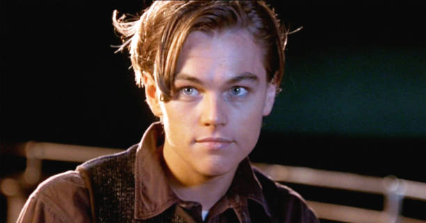
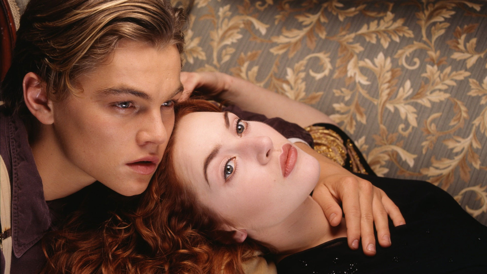
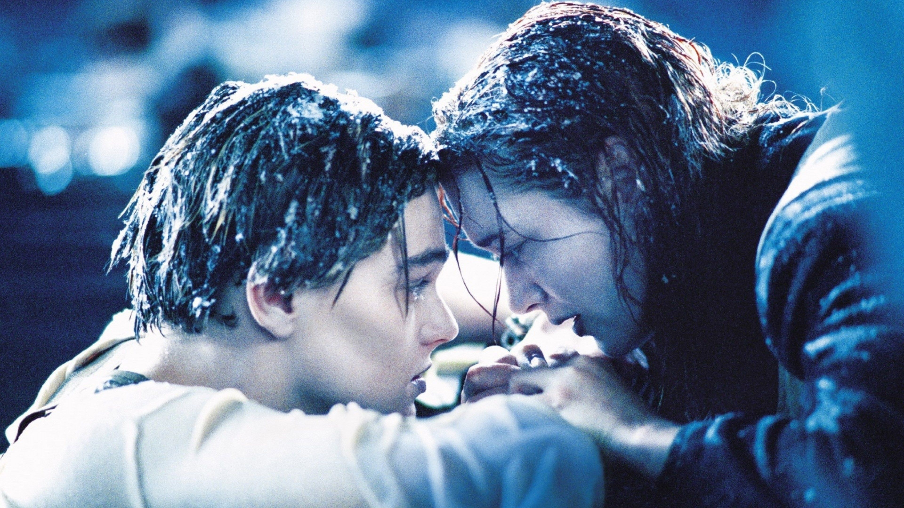
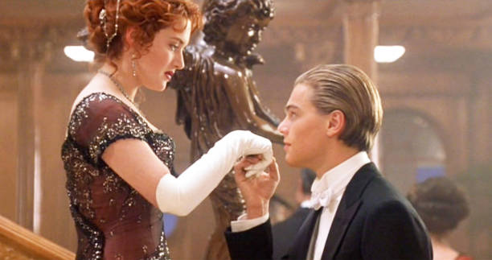

In the spring of 1912, the world watched in awe as the RMS Titanic, the largest and most luxurious ship ever built, prepared to cross the Atlantic on her maiden voyage. A marvel of engineering and elegance, she carried people from every walk of life—rich and poor, hopeful and desperate—all dreaming of new beginnings in America.
Among the passengers was Rose DeWitt Bukater, a seventeen-year-old girl from Philadelphia’s high society. To anyone watching, she had it all—beauty, wealth, status, and a first-class ticket. But inside, Rose felt like a prisoner. Her life was a script written by others: marry the cold, arrogant Cal Hockley, continue the legacy of her family’s name, and never question the world she was born into. Every pearl she wore, every smile she faked, weighed her down like an anchor.

And then came Jack Dawson.
Jack was everything Rose wasn’t allowed to be. A free-spirited artist from Wisconsin, he’d won his third-class ticket in a poker game just minutes before the ship set sail. He had no money, no name worth mentioning—but his heart was full of life. He sketched portraits, danced like the wind, and saw the world through eyes that had learned to find beauty in everything.
Their paths crossed on the edge of everything. One night, overwhelmed by her life, Rose ran to the stern of the ship, ready to let go of it all. Jack, passing by, stopped her—not with force, but with understanding. With gentle words and a steady hand, he reminded her of the life still waiting for her. That moment began something neither of them expected.

Over the days that followed, their bond deepened. Rose discovered freedom in Jack’s world—riding at the front of the ship with arms open wide, dancing barefoot in the third-class quarters, laughing without consequence. Jack showed her who she could be if she stopped living for everyone else. And Rose gave Jack something he had never dared to hope for: someone who truly saw him.
But their love existed in a space the world would not accept.
Cal, Rose’s fiancé, was quick to notice her change. Furious and threatened, he used his power and status to try to tear them apart. He framed Jack for theft, had him locked up, and warned Rose that defying him would mean losing everything. Rose had a choice: return to the safety of a life she didn’t want, or leap into the unknown with Jack.
She chose love.
But just as they thought they had escaped the chains of class and duty, disaster struck. On the fourth night, the Titanic hit an iceberg. The unsinkable ship began to die, slowly at first, then all at once. Panic erupted. Lifeboats were lowered—but there weren’t enough. Orders were shouted. Lights flickered. The ocean crept in.

In the chaos, Rose fought to free Jack, and together they navigated the sinking ship, refusing to be separated. Around them, the world was breaking apart, but their hands stayed locked. Jack never stopped protecting her—not for a second. When Rose was offered a place on a lifeboat, he begged her to go, to survive. But she leapt back onto the ship instead. “You jump, I jump,” she said—because love like theirs did not run.
Finally, as the ship vanished beneath the icy waves, they found a piece of debris. Jack helped Rose climb on, though there was no room for two. In those final moments, he held her hand, spoke softly, and made her promise she would survive. He gave her the strength to go on, even as the cold stole him away.
By the time the rescue ship arrived, Jack was gone—but Rose lived. She held his memory close, never speaking of it for decades, but carrying it in every beat of her heart. She lived the full, free life he had dreamed for her: traveling the world, riding horses, flying planes, laughing without fear.
And though the world knew her as Rose Dawson, few knew the truth. That once, on a ship called Titanic, a boy with nothing and a girl with everything fell in love—not just for days, but forever.

Because some love stories never sink.